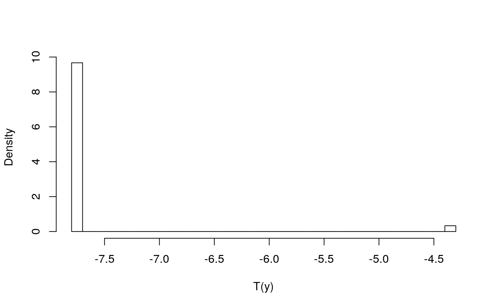
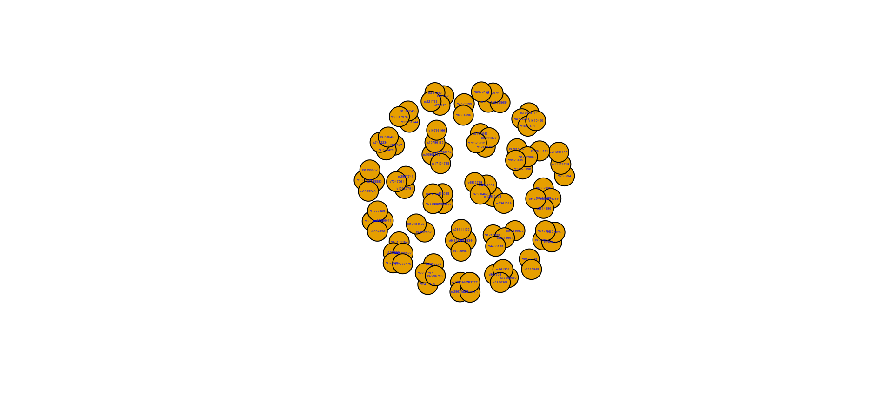

using_molic.RmdAn outlier can be regarded as an observation which deviates so much from the other observations in a database as to arouse suspicions that it was generated by a different mechanism. The outlier detection method directly adapts this definition by specifying a hypothesis of an outlier being distributed differently than all other observations in a given database. An outlier is also a very case-specific unit, since it may be interpreted as natural extreme noise in some applications and in other applications it might be the most interesting observation.
Outlier detection is usually divided into where the task is to detect observations that are extreme for a single variable and in which the task is to detect unusual combinations between several variables.
For high-dimensional data, it is a tedious task to determine anomalies such as outliers. The method described here is a multivariate method for outlier detection in high-dimensional contingency tables, i.e. data with discrete variables only. The method relies on the class of decomposable graphical models to model the relationship among the variables of interest, which can be depicted by an undirected graph called the interaction graph.
In order to model the interaction structure between variables, we need to construct a decomposable graphical model. A graphical model is a statistical model for which an undirected graph represents the interaction between the vertices in the model. An undirected graph is a pair \(G = (V,E)\) where \(V\) is a set of vertices and \(E\) is a set of edges connecting elements in \(V\). An edge connecting two vertices indicates that these two are dependend on each other; this is also called a two-way interaction. A threeway interaction occurs when three vertices are all mutually connected (e.g. can be visualized as a triangle). An undirected graph is decomposable if there are no cycles of length greater than four without a chord (an edge between two non-adjacent vertices in the cycle). The subgraph \(G_{A} = (A, E_{A})\) consist of vertices \(A\subseteq V\) from \(G\) and the corresponding edges \(E_A\) between them. A graph is complete if there is an edge between all pairs of vertices and a complete subgraph is called a (maximal) clique if it is not contained in any other complete subgraph. A subset of vertices is complete if it induces a complete subgraph. Two sets \(A,B \subseteq V\) are separated by a third set \(C \subseteq V\) if all paths between vertices in \(A\) and \(B\) go through \(C\). If \(C\) is the smallest set such that \(A\) and \(B\) are separated, we say that \(C\) is a (minimal) separator for \(A\) and \(B\).
Consider the undirected graph \(G\) in the figure below.
\(G\): An undirected decomposable graph.
The set of vertices is \(V = \{a,b,c,d,e\}\) and the set of edges is \(E = \{ab, bc, bd, cd,de\}\). The cliques are \(C_1 = \{a, b\}\), \(C_2 = \{b, c, d\}\) and \(C_3 = \{d, e\}\). The minimal separators are \(S_{2} = \{b\}\) and \(S_3 = \{d\}\) where \(S_{2}\) separates \(C_{1}\) and \(C_{2}\) and \(S_{3}\) separates \(C_{2}\) and \(C_{3}\). Since \(G\) has no cycles of length greater than three, the graph is decomposable. Notice, that \(a\) is only connected to \(\{c,d,e\}\) through \(\{b\}\); we interpret this as “\(a\) is independent of \(\{c,d,e\}\) when we know the value of \(b\)”. Such statements can be used to gain insight into complex structures.
Finally, we can associate a probability measure with an interaction graph; an undirected graph with each vertex being a random variable. For decomposable graphs, the probability density function can be written in terms of the cliques and separators. Collectively, models for which the interaction graph is decomposable are called decomposable graphical models (DGM). For more details on graphical models, see for example (Whittaker 2009; Lauritzen 1996).
This setup allow us to estimate probabilities of having a specific combination of associated variables. Think of the vertex set \(V = \{a,b,c,d,e\}\) as a set of five variables where each variable can be either zero or one. Then given the decomposable interaction graph \(G\) we can, as an example, estimate the probability that \(a = 1, b = 0, c = 1, d = 1\) and \(e = 0\). In this contrived example there are \(2^{5} = 32\) possible combinations.
Tree graphs are per definition decomposable graphs. Notice that the graph \(G\) is not a tree because of the presence of the cycle \(\{b,c,d\}\). However, the graph is indeed decomposable.
The method is described using an example. For more details see the original paper [TBA]. We use DNA data from the 1000 Genomes Project (Consortium and others 2015) consisting of \(2504\) DNA profiles from \(5\) different continential regions and \(302\) binary DNA markers. The data is shipped with the package and can be used by calling tgp_dat. All DNA markers are further grouped into so-called microhaplotypes. DNA markers within a microhaplotype are known to be associated which is perfect to showcase the model.
For simplicity, we focus on a single microhaplotype containing \(3\) DNA markers which we also rename (to X, Y and Z) to have shorter names.
library(dplyr)##
## Attaching package: 'dplyr'## The following objects are masked from 'package:igraph':
##
## as_data_frame, groups, union## The following objects are masked from 'package:stats':
##
## filter, lag## The following objects are masked from 'package:base':
##
## intersect, setdiff, setequal, unionlibrary(molic)##
## Attaching package: 'molic'## The following object is masked from 'package:stats':
##
## deviancevars <- structure(tgp_haps[[2]], names = c("X", "Y", "Z"))
df_EUR <- tgp_dat %>%
filter(pop_meta == "EUR") %>%
select(!!vars)
df_AFR <- tgp_dat %>%
filter(pop_meta == "AFR") %>%
select(!!vars)molic has a nice function n_a for creating sparse contingency tables. The input is a matrix. It is sparse in the sense, that it do not show the combinations with zero counts. The European table is
molic:::n_a(as.matrix(df_EUR))## GTC TCC TTC TTT
## 3 125 850 28
## attr(,"vars")
## [1] "X" "Y" "Z"and the African table is
molic:::n_a(as.matrix(df_AFR))## GTC TCC TTC TTT
## 158 290 432 442
## attr(,"vars")
## [1] "X" "Y" "Z"From the EUR table we see that only \(3\) profiles have the combination (X,Y,Z) = (G,T,C) whereas in the AFR table \(158\) profiles have that combination. Thus, the two populations seems to differ quite substantially.
Our goal is to test a profile in AFR for being an outlier in EUR. The first step is to model the interaction graph for the variables X, Y and Z with a decomposable graph. We use the efs function to obtain
library(igraph)
DG_EUR <- efs(df_EUR, trace = FALSE)
G_adj <- molic:::efs_adj_list(DG_EUR) # Used for input to the outlier model
G_A <- molic:::efs_adj_matrix(DG_EUR) # Used for igraph plots
iG_A <- igraph::graph_from_adjacency_matrix(G_A, mode = "undirected")
## All the arguments are included to get a feel of how igraph can be used to plot graphs
plot(iG_A,
edge.arrow.size=1,
vertex.label.cex=1.5,
vertex.label.family="Helvetica",
vertex.label.font=1,
vertex.shape="circle",
vertex.size=40,
vertex.label.color="blue",
edge.width=5
)\(G\): Interaction graph for EUR.
The cliques and separator of \(G\) are given by \[ C_{1} = \{ X, Y\}, \quad C_{2} = \{Y, Z \} \quad \mbox{and} \quad S = \{ Y \}. \]
and we can now form the marginal tables. The marginal table of clique \(C_1\) is
## GT TC TT
## 3 125 878
## attr(,"vars")
## [1] "X" "Y"and for \(C_2\)
## CC TC TT
## 125 853 28
## attr(,"vars")
## [1] "Y" "Z"and for \(S\)
## C T
## 125 881
## attr(,"vars")
## [1] "Y"We can then count the number of profiles with a specific combination for the cliques and the separator. The number of profiles having the combination (X, Y) = (T,T) for clique \(C_1\) is for example \(n_{XY}(T,T) = 878\). The number of profiles having combination (Y, Z) = (T,C) for clique \(C_2\) is \({n_{YZ}(T,C) = 853}\) and for the separator the number of profiles with Y = T is \(n_Y(T) = 881\). It can be shown that the -joint probability_ of having the combination (X, Y, Z) = (T, T, C) is given by
In other words, with high probability Europeans have the specific combination (X,Y,Z) = (T, T, C) for this specific microhap under the model. If a new observed profile, say \(z_{new}\), do not have this combination for the selected microhap it supports the belief that this profile might not originate from Europe. We can carry out the same calculations for all microhaps and combine the result into a likelihood \(L_0\) that expresses how likely it is that \(z_{new}\) originates from Europe. We can also specify an alternative likelihood, \(L_{1}\), specifying how likely it is that \(z_{new}\) do not originate from Europe. We then define the likelihood ratio as
which can be shown to be completely specified through the counts of profiles in cliques and separators for the given interaction graph. We can therefore test if \(z_{new}\) is an outlier in Europe by calculating \(LR\) and determine if the value of \(LR\) is “too large” in which case we would reject that \(z_{new}\) originates from Europe.
Under the null hypothesis, \(z_{new}\) belongs to the hypothesised data base (EUR in this case) and so we append the profile. Assume \(z_{new}\) is the \(7'\)th profile from AFR.
z_new <- unlist(df_AFR[7, ]) # It is important to unlist here!
df_EUR_z_new <- df_EUR %>%
bind_rows(z_new)All ingredients are now given in order to make the outlier test.
om <- as.matrix(df_EUR_z_new) %>%
outlier_model(G_adj, nsim = 10000)What we have done is, that we have simulated \(10000\) profiles from df_EUR_7 and for each of those simulations we can calculate \(LR\). In effect, we obtain an estimated distribution of \(LR\) (more precise we get the distribution of \(-2\cdot \log LR\) which is called the deviance) which we can plot
pmf(om)
Since we only have \(3\) variables it looks a bit odd. However, the particular deviance score for \(z_{new}\) is given by
deviance(om, z_new)## [1] -4.346444with p-value for \(z_{new}\) being an outlier in EUR is
## [1] 0and hence we declare \(z_{new}\) as an outlier in EUR on a significance level \(\alpha = 0.05\).
In this example we include more variables from tgp_dat and show how to aggregate decomposable graphs using expert knowledge. We know, that the SNP variables are independent between microhaplotypes. We include the first \(25\) microhaplotypes which consists of \(96\) SNP variables.
microhaps <- tgp_haps[1:25]
vars <- unname(unlist(microhaps))
df_EUR <- tgp_dat %>%
filter(pop_meta == "EUR") %>%
select(vars)
df_AFR <- tgp_dat %>%
filter(pop_meta == "AFR") %>%
select(!!vars)Then we fit an interaction graph on each microhaplotype
micro_graphs <- lapply(microhaps, function(x) {
df_x <- df_EUR[, x]
efs(df_x, trace = FALSE)
})
# Show the first 3
micro_graphs[1:3]## $mh14KK101
## A Decomposable Graph With
## -------------------------
## Nodes: 2
## Edges: 1 / 1
## Cliques: 1
## <efs>
## -------------------------
##
## $mh02KK003
## A Decomposable Graph With
## -------------------------
## Nodes: 3
## Edges: 2 / 3
## Cliques: 2
## <efs>
## -------------------------
##
## $mh02KK134
## A Decomposable Graph With
## -------------------------
## Nodes: 4
## Edges: 6 / 6
## Cliques: 1
## <efs>
## -------------------------Then we extract the graphs and “aggregate” (more precisely we take the union of the graphs) them
And lets plot the fitted interaction graph
iG_union <- molic:::as_adj_mat(G_union) %>%
igraph::graph_from_adjacency_matrix(mode = "undirected")
plot(iG_union,
vertex.label.cex=0.2,
vertex.label.family="Helvetica",
vertex.label.font=1,
vertex.size=20,
vertex.label.color="blue",
edge.width=1
)
Consortium, 1000 Genomes Project, and others. 2015. “A Global Reference for Human Genetic Variation.” Nature 526 (7571). Nature Publishing Group: 68.
Lauritzen, Steffen L. 1996. Graphical Models. Vol. 17. Clarendon Press.
Whittaker, Joe. 2009. Graphical Models in Applied Multivariate Statistics. Wiley Publishing.